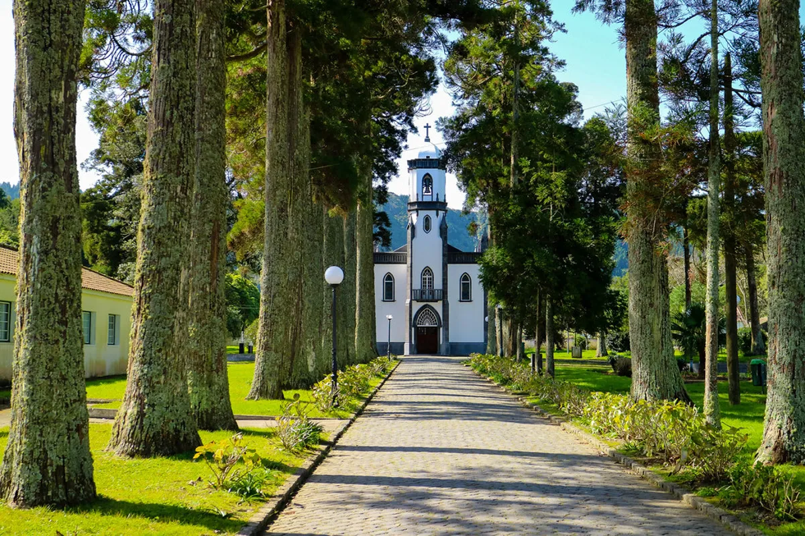
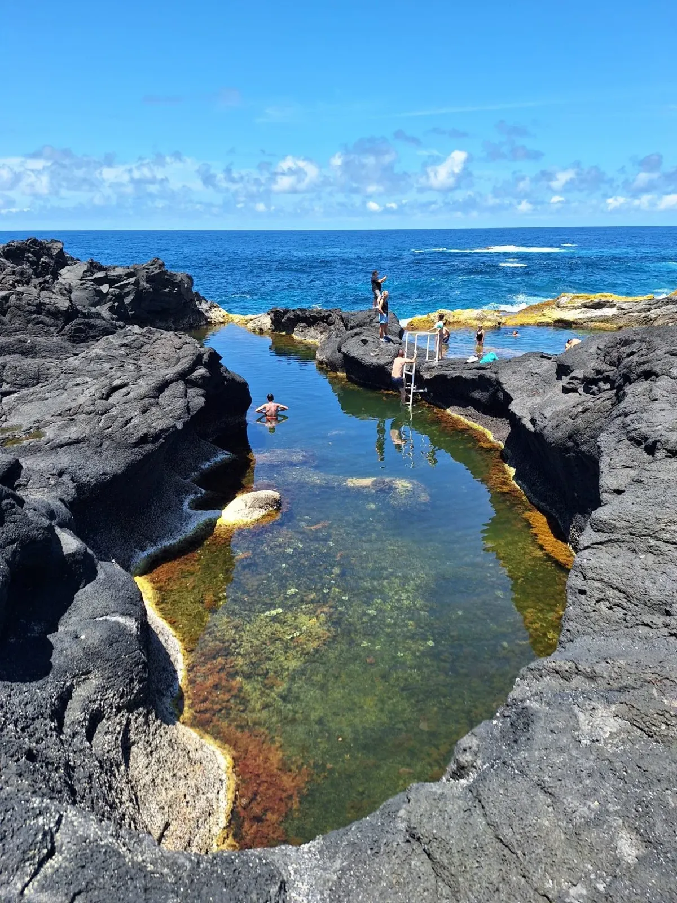

🌋 Oest de São Miguel
Sete Cidades · Mosteiros · Ponta da Ferraria
Hora aproximada de sortida de l'allotjament: 8h
Com que a l'allotjament no tindrem res per menjar i probablement el dia abans no haurem sopat, abans d'agafar els cotxes i posar-nos en marxa, el primer que farem és anar a esmorzar per algun lloc dels voltants.
Ara sí, agafarem els cotxes i visitarem el primer dels molts miradors que ens esperen. Es tracta del Mirador de Pico do Carvão (14 km; 25 min) que ens ha de permetre observar el llac del mateix nom. Després seguirem la ruta i pararem mig quilòmetre més enllà per visitar l'Aqueduto do Carvão, la Lagoa das Empadadas i el Miradouro Pico do Paúl, totes tres localitzacions a pocs metres de distància una de l'altra.


Després seguirem 1,5 km més amb cotxe fins a arribar al pàrquing de la Lagoa do Canário, des d'on iniciarem una petita caminada fins a l'arxiconegut Mirador Boca do Inferno (també anomenat Grota do Inferno), que ens oferirà una vista increïble sobre l'interior del cràter amb el poble i els dos llacs de color blau i verd. Després d'unes quantes fotos desfarem el camí i agafarem de nou els cotxes per arribar-nos a un altre mirador icònic (4,5 km), el de Vista do Rei, des d'on obtindrem una altra perspectiva de la zona igualment preciosa.


Seguidament agafarem de nou els cotxes per endinsar-nos a l'interior del cràter fins a arribar al poble de Sete Cidades (9 km; 15 min), passant durant el trajecte pels miradors de Cerrado das Freiras i de Lagoa de Santiago.

Un cop al poble, en funció de l'hora que sigui, podem fer una passejada curta per la riba dels dos llacs (mirarem si hi ha la possibilitat de fer-ho amb bicicletes de lloguer) i les més aventureres també tindran l'oportunitat de fer paddle surf o kayak per la Lagoa Azul.
L'oferta gastronòmica de Sete Cidades és força limitada, però esperem trobar un lloc per dinar alguna cosa, encara que sigui un entrepà, un biquini o una hamburguesa. Aquests són els cinc restaurants que hi ha al poble.
Per la tarda ens dirigirem cap a l'oest de l'illa, fins al bonic poble pesquer de Mosteiros (11 km; 20 min), on podrem gaudir d'un refrescant bany a la seva espectacular platja o a la piscina natural Caneiros i admirar els illots que caracteritzen la costa d'aquest poble des del Mirador Ponta do Castelo.


Des d'aquí posarem rumb cap al sud resseguint la costa oest de l'illa fins al proper Mirador Ponta do Escalvado (4,2 km; 8 min), on gaudirem de precioses vistes a la costa i els seus penya-segats.
Una mica més al sud (5 km; 15 min) visitarem la imprescindible zona de Ponta da Ferraria. Començarem visitant el mirador panoràmic de Ihla Sabrina (possible pujada al Pico das Camarinhas – 1,3 km) per després baixar fins al pàrquing que hi ha tocar de la costa i des d'on visitarem l'impressionant arc de roca natural Porta do Diabo i la piscina natural d'aigües termals de Ponta da Ferraria, on si ens ve de gust podrem fer l'últim bany del dia (banyador vell o fosc) mentre sentim l'escalfor d'origen volcànic dins el mateix oceà Atlàntic. Idealment anar-hi amb marea baixa o a mitges per notar millor l'escalfor.


Finalment resseguirem la costa sud-oest de São Miguel fins a arribar de nou al nostre allotjament a Ponta Delgada (26 km; 40 min). Al vespre buscarem lloc per sopar a algun dels molts restaurants de la capital.